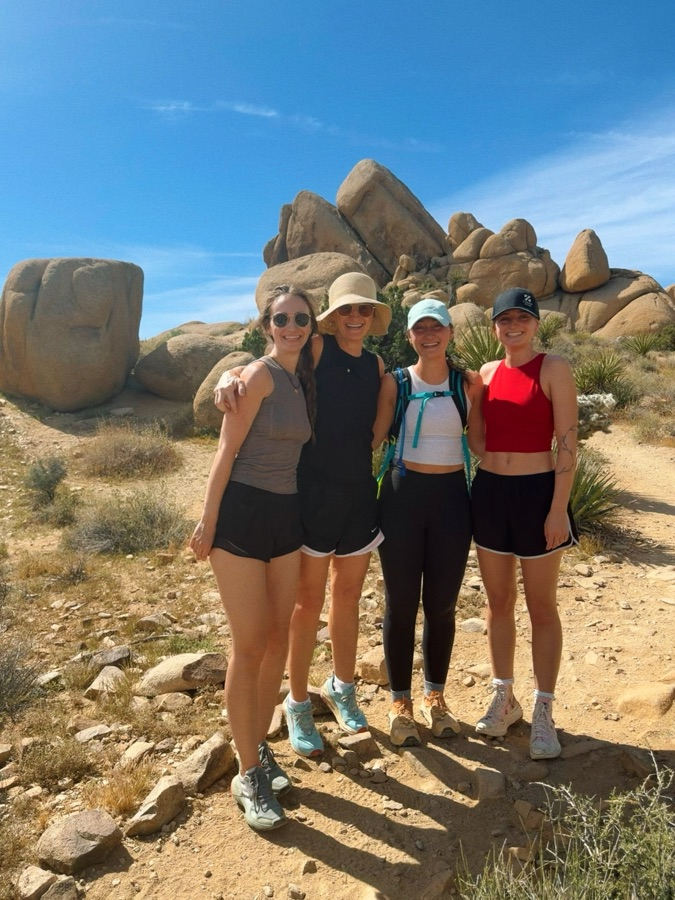
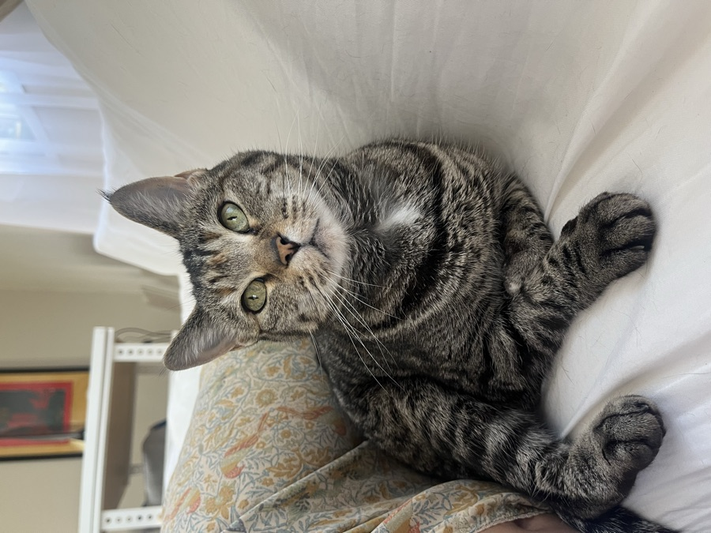
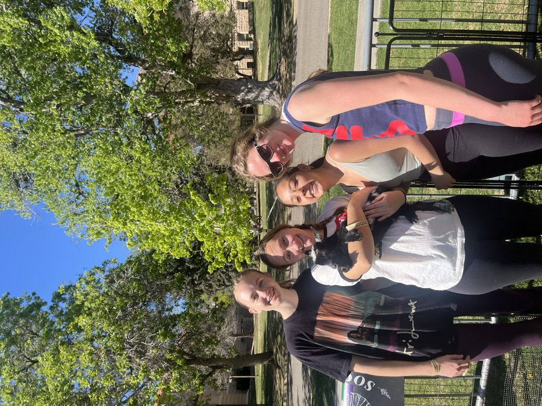
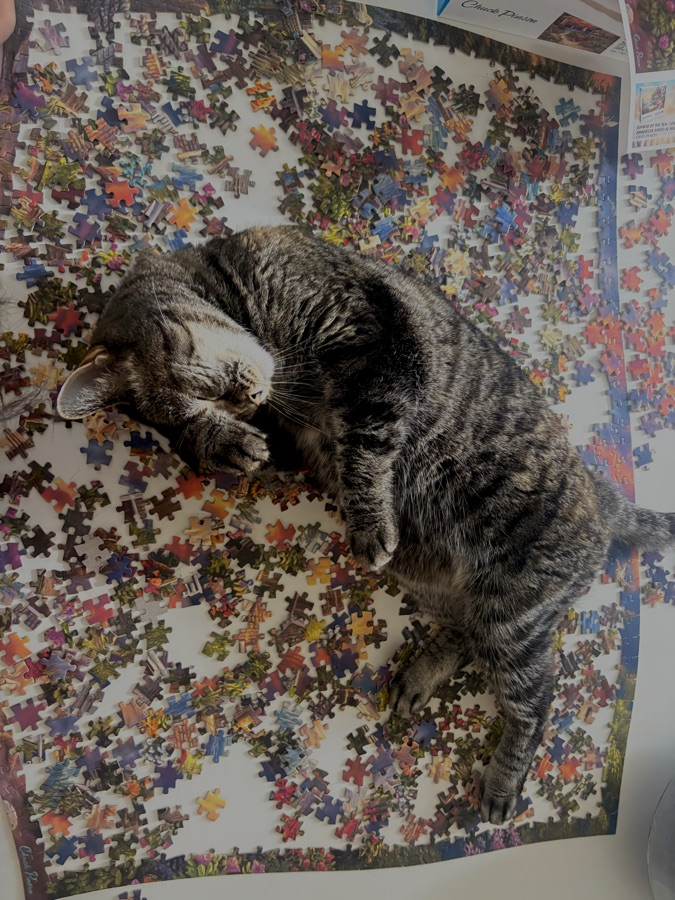

Senior in computer science, data science by focus.
Two degrees at Colorado School of Mines · BS ’27 · MS ’27
aasiedschlag@mines.eduProfessional
01Four years of IT, analytics and project work — while finishing two degrees.
-
Dec 2025 → now
Project Management Office
Colorado School of Mines
Supporting institutional project tracking, reporting, and process documentation across active initiatives.
-
Oct 2024 → now
Student Manager & Documentation Lead
Mines IT Service Desk
Manage a team of student technicians and own the internal knowledge base used for training and escalation.
-
Summer 2024
ESG Software Developer Intern
Janus Henderson Investors
Built internal tooling to collect and validate ESG datasets used in investment research workflows.
-
2022 → 2023
IT Service Desk Technician
Janus Henderson Investors
Provided tier-one and escalated technical support across a global financial services organization.
-
Jul 2021 → Jul 2022
Escalation Engineer Apprentice
Convercent
Triaged and resolved escalated customer issues for a SaaS compliance and ethics platform.
Education & coursework
023.91 GPA · No. 1 in Colorado for computer science, Niche 2026
Completed
Computer Science
- Artificial IntelligenceCSCI
- Software EngineeringCSCI
- DatabasesCSCI
Data Science
- Advanced Data ScienceDSCI
Math Foundations
- Calculus I – IIIMATH
- Linear AlgebraMATH
- Discrete MathematicsMATH
Probability & Statistics
- ProbabilityMATH
- StatisticsMATH
- Statistical ModelingMATH
- Intro to Mathematical StatisticsMATH
In progress — Fall 2026
- Intro to Machine LearningDSCI 570
- Advanced Statistical ModelingMATH 536
- Programming LanguagesCSCI 400
- Coding with AICSCI 498E
What I use it for
On the housing model the interesting work was not the code — it was choosing between a neural net, a random forest and plain regression, and defending the tradeoff with the statistics.
Projects
03Applied data science work, from coursework to independent builds.
Predictive Housing Investment Model
Predictive modeling
Developed and validated a predictive machine learning model for housing investment strategy, using artificial neural networks, random forest, and linear regression on integrated climate, housing, and demographic datasets to forecast market trends and recommend optimal investment locations.
Code available on request
City of Idaho Springs Economic Impacts Dashboard
Team dashboard · Scrum Master
Partnered with the City of Idaho Springs and a team of five to build a multi-source economic impact dashboard in Power BI; served as Scrum Master, contributed to data ingestion and modeling, and authored technical reports consumed by city departments and external stakeholders.
Dashboard available on request
Clue Digital Simulation
Software engineering
Engineered a functional digital simulation of the classic game Clue in Java, using JIRA for agile project management to track sprints, manage the feature backlog, and resolve development issues within a structured, iterative workflow.
Code available on request
Data Languages
Software Languages
ML & Modeling
Tools & Platforms
Process
Personal
04When I'm not in class or at work, you'll usually find me outside, hiking, reading, or just enjoying Colorado, or at home with my cats, catching up with family and friends. I'm also an unapologetic puzzler and a devoted reality TV fan.



